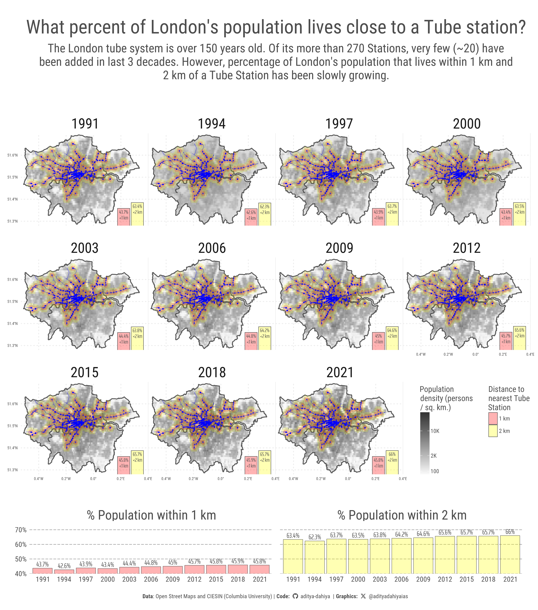
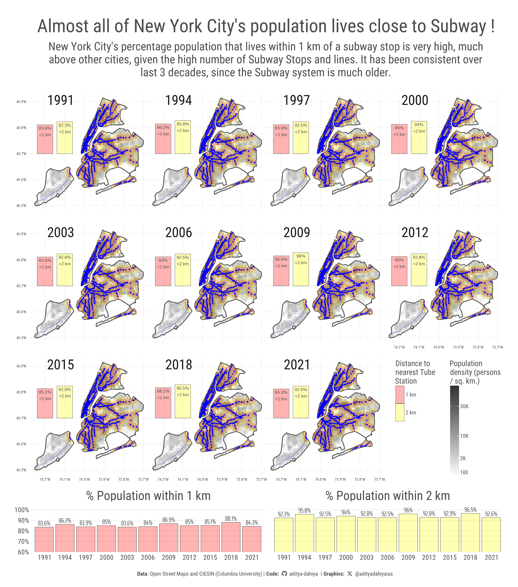

What percentage of population lives near a metro station?
An analysis for various cities, over time, on population density near metro stations and analysis using rsater data and Open Street Maps data
Data Visualization
Maps
{sf}
{osmdata}
Open Street Maps
Gecomputation
{rnaturalearth}
Author
Aditya Dahiya
Published
February 16, 2025
Loading required packages
The tidyverse package is loaded for data manipulation and visualization, while sf and terra handle spatial vector and raster data, respectively. The tidyterra package acts as a bridge between terra and ggplot2, enabling raster visualization in a tidy framework. For enhanced plot aesthetics, the script utilizes several ggplot2 extensions. scales provides improved axis scaling, fontawesome adds icons, and ggtext enables markdown formatting in text elements. Custom fonts are incorporated using sysfonts and displayed via showtext, ensuring that Google Fonts (e.g., Roboto Condensed, Oswald, Saira Extra Condensed) are seamlessly integrated. The patchwork package facilitates the composition of multiple plots.
A minimalist theme is established using theme_minimal() with a base_size of 24 and a body_font for text. Colors are defined and printed with seecolor, ensuring consistency in highlighted text and background colors. Additionally, custom captions incorporating Font Awesome icons are created using glue, dynamically styling GitHub and Twitter/X handles within the plot caption.
Code
# Data wrangling & visualizationlibrary(tidyverse) # Data manipulation & visualization# Spatial data handlinglibrary(sf) # Import, export, and manipulate vector datalibrary(terra) # Import, export, and manipulate raster data# ggplot2 extensionslibrary(tidyterra) # Helper functions for using terra with ggplot2# Final plot toolslibrary(scales) # Nice Scales for ggplot2library(fontawesome) # Icons display in ggplot2library(ggtext) # Markdown text in ggplot2library(showtext) # Display fonts in ggplot2library(patchwork) # Composing Plotsbts =24# Base Text Sizesysfonts::font_add_google("Roboto Condensed", "body_font")sysfonts::font_add_google("Oswald", "title_font")sysfonts::font_add_google("Saira Extra Condensed", "caption_font")showtext::showtext_auto()# A base Colourbg_col <-"white"seecolor::print_color(bg_col)# Colour for highlighted texttext_hil <-"grey30"seecolor::print_color(text_hil)# Colour for the texttext_col <-"grey20"seecolor::print_color(text_col)theme_set(theme_minimal(base_size = bts,base_family ="body_font" ) +theme(text =element_text(colour ="grey30",lineheight =0.3,margin =margin(0,0,0,0, "pt") ),plot.title =element_text(hjust =0.5,margin =margin(0,0,0,0, "pt") ),plot.subtitle =element_text(hjust =0.5,margin =margin(0,0,0,0, "pt") ) ))# Caption stuff for the plotsysfonts::font_add(family ="Font Awesome 6 Brands",regular = here::here("docs", "Font Awesome 6 Brands-Regular-400.otf"))github <-""github_username <-"aditya-dahiya"xtwitter <-""xtwitter_username <-"@adityadahiyaias"social_caption_1 <- glue::glue("<span style='font-family:\"Font Awesome 6 Brands\";'>{github};</span> <span style='color: {text_hil}'>{github_username} </span>")social_caption_2 <- glue::glue("<span style='font-family:\"Font Awesome 6 Brands\";'>{xtwitter};</span> <span style='color: {text_hil}'>{xtwitter_username}</span>")plot_caption <-paste0("**Data**: Open Street Maps and CIESIN (Columbia University)"," | **Code:** ", social_caption_1, " | **Graphics:** ", social_caption_2 )rm(github, github_username, xtwitter, xtwitter_username, social_caption_1, social_caption_2)
Get metro-lines, metro stations and buffer zones in Delhi (India)
This R script retrieves and processes metro lines and stations in New Delhi using data from OpenStreetMap (OSM) via the osmextract package and administrative boundaries from the geodata package. First, a district-level map of Delhi is obtained with geodata::gadm(), filtered for the “NCT of Delhi” region. Next, the script extracts different spatial layers from OSM:
Metro lines using osmextract::oe_get(place = "Delhi", layer = "lines")
Metro stations (point data) using osmextract::oe_get(layer = "points")
Metro station polygons using osmextract::oe_get(layer = "multipolygons")
The metro station points are filtered from points_delhi based on OSM tags ("railway"=>"stop","subway"=>"yes"), while metro station polygons are identified from polygons_delhi and their centroids are calculated with st_centroid().
Finally, buffer zones of 1 km and 2 km around metro stations are created using st_buffer(), helping analyze areas within walkable distances to metro stops. These buffers are spatially clipped to Delhi’s boundaries.
Code
# Get metro-lines in New Delhi, and the metro stations using data from Open Street Maps using {osmextract}# Get Delhi Map from GADM / {geodata} with geodata::gadm()# District Wise Mapdelhi_map <- geodata::gadm(country ="India",level =2,path =tempdir()) |>st_as_sf() |> janitor::clean_names() |>filter(name_1 =="NCT of Delhi") |>select(name_1, geometry)lines_delhi <- osmextract::oe_get(place ="Delhi",layer ="lines",download_directory ="C:/Users/dradi/OneDrive/Desktop/pop_raster_data_temp"#download_directory = "C:/Users/dradi/Desktop/pop_raster_data_temp")points_delhi <- osmextract::oe_get(place ="Delhi",layer ="points",download_directory ="C:/Users/dradi/OneDrive/Desktop/pop_raster_data_temp"#download_directory = "C:/Users/dradi/Desktop/pop_raster_data_temp")polygons_delhi <- osmextract::oe_get(place ="Delhi",layer ="multipolygons",download_directory ="C:/Users/dradi/OneDrive/Desktop/pop_raster_data_temp"#download_directory = "C:/Users/dradi/Desktop/pop_raster_data_temp")# points_delhi |> # names()subway_stops1 <- points_delhi |>select(osm_id, name, other_tags, geometry) |># st_drop_geometry() |># as_tibble() |>filter(str_detect(other_tags, 'railway"=>"stop","subway"=>"yes"')) |>select(-other_tags)subway_stops2 <- polygons_delhi |># st_drop_geometry() |> # as_tibble() |> filter(str_detect(other_tags, "subway")) |>select(osm_id, name, geometry) |>mutate(geometry =st_centroid(geometry))subway_stops <-bind_rows( subway_stops1, subway_stops2) |>st_intersection(delhi_map)rm(subway_stops1, subway_stops2)subway_lines <- lines_delhi |># st_drop_geometry() |> # as_tibble() |> filter(str_detect(railway, "subway")) |>select(osm_id, name, railway, geometry) |>st_intersection(delhi_map)subway_stops_buffer_1km <- subway_stops |>st_union() |>st_buffer(dist =1000) |>st_intersection(delhi_map)subway_stops_buffer_2km <- subway_stops |>st_union() |>st_buffer(dist =2000) |>st_intersection(delhi_map)rm(lines_delhi, points_delhi, polygons_delhi)
An initial basic plot
This R code creates a spatial visualization of Delhi’s subway system using the ggplot2 package and its geom_sf() function to handle spatial features. The base map (delhi_map) is plotted first, followed by layers representing subway stops (subway_stops in blue), subway lines (subway_lines in dark grey), and buffer zones around subway stops at 1 km and 2 km (subway_stops_buffer_1km and subway_stops_buffer_2km, shaded in semi-transparent red). The alpha() function from scales is used to set transparency levels for better visualization.
Code
g <-ggplot() +geom_sf(data = delhi_map) +geom_sf(data = subway_stops,colour ="blue",size =1,alpha =0.5 ) +geom_sf(data = subway_lines,colour ="grey20",linewidth =0.2 ) +geom_sf(data = subway_stops_buffer_2km,fill =alpha("red", 0.3), colour ="transparent",linewidth =0.1 ) +geom_sf(data = subway_stops_buffer_1km,fill =alpha("red", 0.3), colour ="transparent",linewidth =0.1 ) +labs(title ="Delhi: Subway Stops and Lines",subtitle ="Areas within 1 km and 2 km of subway stops are shaded" ) +theme(panel.grid =element_line(linewidth =0.2 ) )ggsave(plot = g, filename = here::here("projects", "images","cities_pop_subway_1.png" ),height =1200,width =1200,units ="px",bg ="white")
Figure 1: A basic map of Delhi, with metro stations and 1-km and 2-km buffer zones around metro stations.
Population Density Raster for New Delhi
Full article and code on how to get these population density rasters for any city in the world is here.
This R script processes and visualizes population density data for New Delhi using raster data from (Liu et al. 2024) focusing on areas near subway stops. The script employs the terra package to handle raster operations and the sf package for spatial vector data. The 2022 population density raster is then loaded with rast(), cropped, and masked to fit the delhi_map boundary. Negative values are replaced with a small constant (0.001) to avoid computational issues. The script extracts non-missing values from the raster, calculates summary statistics (mean, total_pop), and estimates population distribution within 1 km and 2 km buffers around subway stops using terra::extract(). A ggplot2-based map visualizes population density with geom_spatraster() (from ggspatial). A scale_fill_gradient2() function transforms density values with a square root scale for better readability. The map overlays:
Population buffers (geom_sf(subway_stops_buffer_1km, subway_stops_buffer_2km))
Code
# output_file <- paste0("GlobPOP_Count_30arc_", i, "_I32.tiff")# # # ALERT: Downloads Massive amounts of Data ---------------------------# for (i in year_ranges) {# url <- paste0(# "https://zenodo.org/records/11179644/files/GlobPOP_Count_30arc_", # i, # "_I32.tiff"# )# # output_file <- paste0("GlobPOP_Count_30arc_", i, "_I32.tiff")# # # Attempt to download the file with error handling# tryCatch({# download.file(url, output_file, mode = "wb")# cat("Successfully downloaded:", output_file, "\n")# }, error = function(e) {# cat("Error downloading:", output_file, "-", conditionMessage(e), "\n")# })# }# --------------------------------------------------------------------# A 2022 population raster of Delhirast_2022 <-rast("GlobPOP_Count_30arc_2022_I32.tiff") |> terra::crop(delhi_map) |> terra::mask(delhi_map, touches =FALSE)rast_2022[rast_2022 <=0] <-0.001names(rast_2022) <-c("year_2022")total_rast_pop <- rast_2022 |>values() |>as_tibble() |>filter(!is.na(year_2022)) |>summarise(n =n(),mean_pop =mean(year_2022, na.rm = T),total_pop = n * mean_pop )pop_compute <- rast_2022 |> terra::extract(c(subway_stops_buffer_1km, subway_stops_buffer_2km) |>st_as_sf() |>rename(geometry = x) ) |>as_tibble() |>group_by(ID) |>summarise(n =n(),mean_pop =mean(year_2022, na.rm = T) ) |>mutate(year =2022,zone =c("1 km", "2 km"),total_pop = n * mean_pop,perc_pop = total_pop / total_rast_pop$total_pop)g <-ggplot() +geom_spatraster(data = rast_2022 ) +scale_fill_gradient2(low ="white",high ="grey20",na.value ="transparent",transform ="sqrt",name ="Population density\n(persons / sq. km.)",breaks =c(0, 100, 2000, 1e4, 3e4, 5e4),labels = scales::label_number(scale_cut =cut_short_scale()) ) +geom_sf(data = delhi_map,fill =NA ) +geom_sf(data = subway_stops,colour ="blue",size =0.4,alpha =0.5 ) +geom_sf(data = subway_lines,colour ="blue",linewidth =0.1,linetype ="longdash" ) +geom_sf(data = subway_stops_buffer_2km,fill =alpha("red", 0.1), colour ="transparent",linewidth =0.1 ) +geom_sf(data = subway_stops_buffer_1km,fill =alpha("red", 0.2), colour ="transparent",linewidth =0.1 ) +labs(title ="Delhi: Population Density vs. Subway Stops (Year: 2022)",subtitle ="Areas within 1 km and 2 km of a Metro (Subway) stop are coloured in red.",caption = plot_caption ) +theme(legend.position ="inside",plot.caption =element_textbox(halign =0.5, hjust =0.5,size = bts *0.6 ),panel.grid =element_line(linewidth =0.6),legend.position.inside =c(0, 0),legend.justification =c(0, 0),legend.direction ="horizontal",legend.title.position ="top",legend.title =element_text(margin =margin(0,0,2,0, "pt"),lineheight =0.3 ),legend.text =element_text(margin =margin(1,0,0,0, "pt") ),legend.key.height =unit(2, "pt"),plot.margin =margin(5,0,5,0, "pt"),plot.title =element_text(margin =margin(5,0,5,0, "pt") ) )ggsave(plot = g, filename = here::here("projects", "images","cities_pop_subway_2.png" ),height =1200,width =1200,units ="px",bg ="white")
Figure 2: A map, like earlier figure, but with a population density raster map of Delhi, in grayscale.
Code for plotting and comparing multiple years (1990-2022)
This R script analyzes population distribution around subway stations in Delhi over time using raster and vector spatial data. It utilizes the {terra} package (terra) for raster data processing, {sf} (sf) for handling vector spatial data, and {ggplot2} (ggplot2) for visualization. The script begins by selecting years to analyze and defining buffer zones of 1 km and 2 km around subway stations. It then iterates through each year, loading and cropping population raster data to match the Delhi map boundaries, replacing zero values with a small positive value to avoid computational errors. The raster is masked to exclude areas outside Delhi, and population values are extracted within the defined buffer zones.
The extracted population data is summarized using {dplyr} (dplyr) functions such as group_by(), summarise(), and mutate(), calculating mean and total population within each buffer. The script constructs a multi-layered raster stack to store population data across years and visualizes the results with {ggplot2}. A bar chart compares the proportion of Delhi’s population within 1 km and 2 km of metro stations over time, highlighting the relatively stable percentage despite metro expansion.
The analysis shows that the Delhi Metro did not significantly increase population density around metro stations over time. Instead, the metro appears to have been built to connect already densely populated areas rather than driving new population growth in those locations. This suggests that metro development follows existing population patterns, rather than causing major demographic shifts.
Code
# Years to plotselected_year =c(seq(1991, 2018, 3), 2020)# a blank tibble to start withpop_compute <-tibble()# Buffer Zones of 1 km and 2 km around the Subway Stationscompute_areas <-c(subway_stops_buffer_1km, subway_stops_buffer_2km) |>st_as_sf() |>rename(geometry = x)for(i in selected_year) { rast <-rast(paste0("GlobPOP_Count_30arc_", i, "_I32.tiff")) |> terra::crop(delhi_map) |> terra::mask(delhi_map, touches =FALSE) rast[rast <=0] <-0.001names(rast) <-"year_vals" total_rast_pop <- rast |>values() |>as_tibble() |>filter(!is.na(year_vals)) |>summarise(n =n(),mean_pop =mean(year_vals, na.rm = T),total_pop = n * mean_pop ) pop_compute <-bind_rows( pop_compute, rast |> terra::extract(compute_areas) |>as_tibble() |>group_by(ID) |>summarise(n =n(),mean_pop =mean(year_vals, na.rm = T) ) |>mutate(year = i,zone =c("1 km", "2 km"),total_pop = n * mean_pop,tot_del_pop = total_rast_pop$total_pop,perc_pop = total_pop / total_rast_pop$total_pop ) )paste0("rast_", i) |>assign(rast)}## Compile into a one multi-layered raster -----------------------------# Initialize an empty SpatRaster objectrast_stack <-NULL# Loop through each year and add the raster if it existsfor (y in selected_year) { rast_name <-paste0("rast_", y) # Construct variable nameif (exists(rast_name)) { # Check if raster exists rast <-get(rast_name) # Retrieve rasterif (is.null(rast_stack)) { rast_stack <- rast # Initialize with first available raster } else { rast_stack <-c(rast_stack, rast) # Append to SpatRaster } } else {message(paste("Skipping year", y, "as raster is missing")) }}names(rast_stack) <-as.character(selected_year)varnames(rast_stack) <-as.character(selected_year)pop_compute |>ggplot(aes(x = year, y = tot_del_pop) ) +geom_col() +facet_wrap(~zone) +scale_y_continuous(labels =label_number(scale_cut =cut_short_scale()))plotdf1 <- pop_compute |>mutate(lyr =as.character(year) ) |>mutate(x_var =case_when( zone =="1 km"~76.9, zone =="2 km"~77.0,.default =NA ),y_var =28.4+ ((0.1* perc_pop) *1/0.75) )ggplot() +geom_col(data = plotdf1,mapping =aes(y = y_var,x = x_var,fill = zone ),colour ="grey30",linewidth =0.3 ) +geom_text(data = plotdf1,mapping =aes(label =paste0(round(perc_pop *100, 1),"%","\n<", zone),y = y_var,x = x_var ),colour ="grey30",vjust =1.2,hjust =0.5,size =2,lineheight =0.45 ) +facet_wrap(~lyr ) +scale_fill_manual(name ="Distance to nearest\nMetro Station",values =c(alpha("red", 0.3),alpha("yellow", 0.3) ) ) +coord_sf(default_crs ="EPSG:4326",ylim =c(28.4, 28.9),xlim =c(76.85, 77.33) ) +theme_minimal(base_size =12 )pop_compute |>ggplot(aes(x = year,y = perc_pop ) ) +geom_col() +scale_x_continuous(breaks = selected_year ) +facet_wrap(~zone) +theme(axis.text.x =element_text(angle =90 ) )# Convert 2021 and 2022 rasters to integer class, instead of double# rast_stack$`2021` <- as.int(rast_stack$`2021`)g1 <-ggplot() +geom_spatraster(data = rast_stack ) +scale_fill_gradient2(low ="white",high ="grey20",na.value ="transparent",transform ="sqrt",name ="Population\ndensity (persons\n/ sq. km.)",breaks =c(0, 100, 2000, 1e4, 3e4, 5e4),limits =c(100, 6e4),oob = scales::squish,labels = scales::label_number(scale_cut =cut_short_scale()) ) +geom_sf(data = delhi_map,fill =NA,linewidth =0.9 ) +geom_sf(data = subway_stops_buffer_2km,fill =alpha("yellow", 0.3), colour ="transparent",linewidth =0.1 ) +geom_sf(data = subway_stops_buffer_1km,fill =alpha("red", 0.3), colour ="transparent",linewidth =0.1 ) +geom_sf(data = subway_stops,colour ="blue",size =1,alpha =0.5 ) +geom_sf(data = subway_lines,colour ="blue",linewidth =0.2 ) + ggnewscale::new_scale_fill()+geom_col(data = plotdf1,mapping =aes(y = y_var,x = x_var,fill = zone ),colour ="grey30",linewidth =0.3 ) +geom_text(data = plotdf1,mapping =aes(label =paste0(round(perc_pop *100, 1),"%","\n<", zone),y = y_var,x = x_var ),colour ="grey30",vjust =1.2,hjust =0.5,size =11,lineheight =0.3,family ="caption_font" ) +scale_fill_manual(name ="Distance to\nnearest Metro\nStation",values =c(alpha("red", 0.3),alpha("yellow", 0.3) ) ) +facet_wrap(~lyr,ncol =4 ) +coord_sf(default_crs ="EPSG:4326",ylim =c(28.4, 28.9),xlim =c(76.8, 77.35),expand =FALSE ) +labs(title ="What percent of Delhi's population lives close to a metro station?",subtitle =str_wrap("Delhi Metro (Subway) was started in 2002, First phase was completed in 2006, phase II in 2011, and phase III in 2021. Surprisingly, the percentage of population that lives in areas that are now within 1-2 km of metro stations has not changed since early 1990s!", 100),caption = plot_caption,x =NULL, y =NULL ) +theme(text =element_text(colour ="grey30" ),legend.position ="inside",panel.grid =element_line(linewidth =0.6,linetype =3 ),# Customizing the Legendlegend.position.inside =c(1, 0),legend.justification =c(1, 0),legend.direction ="vertical",legend.box ="horizontal",legend.box.margin =margin(0,1,0,0, "pt"),legend.margin =margin(0,0,0,0, "pt"),legend.title.position ="top",legend.title =element_text(margin =margin(0,0,2,0, "pt"),lineheight =0.3,size = bts *1.7 ),legend.text =element_text(margin =margin(0,0,0,2, "pt"),size = bts *1.2 ),legend.key.height =unit(30, "pt"),legend.key.width =unit(10, "pt"),plot.margin =margin(5,0,5,0, "pt"),plot.title =element_text(margin =margin(15,0,5,0, "pt"),size =4* bts,hjust =0.5 ),plot.subtitle =element_text(margin =margin(0,0,0,0, "pt"),lineheight =0.3,hjust =0.5,size =2.5* bts ),plot.caption =element_textbox(halign =0.5, hjust =0.5,size = bts *1.2,margin =margin(150,0,0,0, "pt") ),panel.spacing =unit(0, "pt"),panel.background =element_rect(fill ="transparent",colour ="transparent" ),strip.text =element_text(margin =margin(5,0,0,0, "pt"),hjust =0.5,size = bts *3 ),axis.ticks =element_blank(),axis.ticks.length =unit(0, "pt") )# An inset graph of changes over yearsstrip_labels <-c("% Population within 1 km","% Population within 2 km")names(strip_labels) <-unique(plotdf1$zone)g2 <-ggplot(data = plotdf1,mapping =aes(x =as.character(year), y = perc_pop,fill = zone ) ) +geom_col(colour ="grey20",linewidth =0.2 ) +geom_text(mapping =aes(label =paste0(round(100* perc_pop, 1), "%") ),hjust =0.5,vjust =-0.35,size =12,colour ="grey30",family ="caption_font" ) +scale_y_continuous(labels =label_percent(),expand =expansion(c(0, 0.2)) ) +scale_fill_manual(values =c(alpha("red", 0.3),alpha("yellow", 0.3) ) ) +facet_wrap(~zone,labeller =labeller(zone = strip_labels) ) +labs(x =NULL, y =NULL) +theme(panel.grid =element_blank(),panel.grid.major.y =element_line(linewidth =0.3, linetype ="longdash",colour ="grey50" ),legend.position ="none",axis.ticks.length =unit(0, "pt"),axis.text =element_text(size =36 ),strip.text =element_text(size =66,margin =margin(0,0,0,0, "pt"),colour ="grey30" ) )g <- g1 +inset_element(p = g2,left =0, right =1,bottom =0.02, top =0.17,align_to ="full" )ggsave(plot = g, filename = here::here("projects", "images","cities_pop_subway_3.png" ),height =1200* (3*5/4),width =1200*3,units ="px",bg ="white")
Figure 3: The graphic illustrates the proportion of Delhi’s population residing within 1 km and 2 km of a metro station across multiple years. Each facet represents a different year, showing how population distribution relative to metro accessibility has evolved over time. The bar heights indicate the percentage of the total population within the respective buffer zones, while the background map provides spatial context for metro stations, lines, and population density. An inset chart further summarizes the temporal trends for both buffer zones.
Same Analysis for London
The following code does the exact same analysis for Greater London (UK).
Code
# Get a basic map of Greater London Arealondon_map <- spData::lnd |>st_union() |>st_as_sf() |>st_transform("EPSG:4326")# Get Subway Lines and Subway Stops (called Tube in London)library(osmdata)subway_lines_london <-opq(bbox =st_bbox(london_map)) |>add_osm_feature(key ="railway",value ="subway" ) |>osmdata_sf()subway2 <- subway_lines_london$osm_lines |>st_intersection(london_map)subway_stations_london <-opq(bbox =st_bbox(london_map)) |>add_osm_feature(key ="railway",value ="subway_entrance" ) |>osmdata_sf()subway3 <- subway_stations_london$osm_points |>st_intersection(london_map)# subway_route_london <- opq(bbox = st_bbox(london_map)) |> # add_osm_feature(# key = "railway",# value = c("light_rail", "monorail", "tram")# ) |> # osmdata_sf()# # subway4 <- subway_route_london$osm_lines |> # st_intersection(london_map)# A test map for london and subway stationsggplot() +geom_sf(data = london_map) +geom_sf(data = subway3,colour ="red",size =0.5 ) +geom_sf(data = subway2,colour ="blue" )subway_stops <- subway3subway_lines <- subway2subway_stops_buffer_1km <- subway_stops |>st_union() |>st_buffer(dist =1000) |>st_intersection(london_map)subway_stops_buffer_2km <- subway_stops |>st_union() |>st_buffer(dist =2000) |>st_intersection(london_map)# Years to plotselected_year =seq(1991, 2022, 3)# a blank tibble to start withpop_compute <-tibble()# Buffer Zones of 1 km and 2 km around the Subway Stationscompute_areas <-c(subway_stops_buffer_1km, subway_stops_buffer_2km) |>st_as_sf() |>rename(geometry = x)for(i in selected_year) { rast <-rast(paste0("GlobPOP_Count_30arc_", i, "_I32.tiff")) |> terra::crop(london_map) |> terra::mask(london_map, touches =FALSE) rast[rast <=0] <-0.001names(rast) <-"year_vals" total_rast_pop <- rast |>values() |>as_tibble() |>filter(!is.na(year_vals)) |>summarise(n =n(),mean_pop =mean(year_vals, na.rm = T),total_pop = n * mean_pop ) pop_compute <-bind_rows( pop_compute, rast |> terra::extract(compute_areas) |>as_tibble() |>group_by(ID) |>summarise(n =n(),mean_pop =mean(year_vals, na.rm = T) ) |>mutate(year = i,zone =c("1 km", "2 km"),total_pop = n * mean_pop,tot_del_pop = total_rast_pop$total_pop,perc_pop = total_pop / total_rast_pop$total_pop ) )paste0("rast_", i) |>assign(rast)}## Compile into a one multi-layered raster -----------------------------# Initialize an empty SpatRaster objectrast_stack <-NULL# Loop through each year and add the raster if it existsfor (y in selected_year) { rast_name <-paste0("rast_", y) # Construct variable nameif (exists(rast_name)) { # Check if raster exists rast <-get(rast_name) # Retrieve rasterif (is.null(rast_stack)) { rast_stack <- rast # Initialize with first available raster } else { rast_stack <-c(rast_stack, rast) # Append to SpatRaster } } else {message(paste("Skipping year", y, "as raster is missing")) }}names(rast_stack) <-as.character(selected_year)varnames(rast_stack) <-as.character(selected_year)# Check total population of London# pop_compute |> # ggplot(# aes(x = year, y = tot_del_pop)# ) +# geom_col() +# facet_wrap(~zone) +# scale_y_continuous(labels = label_number(scale_cut = cut_short_scale()))# Rework the dataset so that it can be displayed on coord_sf()plotdf1 <- pop_compute |>mutate(lyr =as.character(year) ) |>mutate(x_var =case_when( zone =="1 km"~0.22, zone =="2 km"~0.32,.default =NA ),y_var =51.3+ ((0.1* perc_pop) *1/0.75) )ggplot() +geom_col(data = plotdf1,mapping =aes(y = y_var,x = x_var,fill = zone ),colour ="grey30",linewidth =0.3 ) +geom_text(data = plotdf1,mapping =aes(label =paste0(round(perc_pop *100, 1),"%","\n<", zone),y = y_var,x = x_var ),colour ="grey30",vjust =1.2,hjust =0.5,size =2,lineheight =0.45 ) +facet_wrap(~lyr, ) +scale_fill_manual(name ="Distance to nearest\nTube Station",values =c(alpha("red", 0.3),alpha("yellow", 0.3) ) ) +coord_sf(default_crs ="EPSG:4326",ylim =c(51.28, 51.7),xlim =c(-0.53, 0.45),expand =FALSE ) +theme_minimal(base_size =12 )# Check change in percentage population near Tube Station over time# pop_compute |> # ggplot(# aes(# x = year,# y = perc_pop# )# ) +# geom_col() +# scale_x_continuous(# breaks = selected_year# ) +# facet_wrap(~zone) +# theme(# axis.text.x = element_text(# angle = 90# )# )# Convert 2021 and 2022 rasters to integer class, instead of double# rast_stack$`2021` <- as.int(rast_stack$`2021`)g1 <-ggplot() +geom_spatraster(data = rast_stack ) +scale_fill_gradient2(low ="white",high ="grey20",na.value ="transparent",transform ="sqrt",name ="Population\ndensity (persons\n/ sq. km.)",breaks =c(0, 100, 2000, 1e4),limits =c(10, 2e4),oob = scales::squish,labels = scales::label_number(scale_cut =cut_short_scale()) ) +geom_sf(data = london_map,fill =NA,linewidth =0.7 ) +geom_sf(data = subway_stops_buffer_2km,fill =alpha("yellow", 0.2), colour ="transparent",linewidth =0.1 ) +geom_sf(data = subway_stops_buffer_1km,fill =alpha("red", 0.2), colour ="transparent",linewidth =0.1 ) +geom_sf(data = subway_stops,colour ="blue",size =0.5,alpha =0.5 ) +geom_sf(data = subway_lines,colour ="blue",linewidth =0.1 ) + ggnewscale::new_scale_fill()+geom_col(data = plotdf1,mapping =aes(y = y_var,x = x_var,fill = zone ),colour ="grey30",linewidth =0.3 ) +geom_text(data = plotdf1,mapping =aes(label =paste0(round(perc_pop *100, 1),"%","\n<", zone),y = y_var,x = x_var ),colour ="grey30",vjust =1.2,hjust =0.5,size =9,lineheight =0.3,family ="caption_font" ) +scale_fill_manual(name ="Distance to\nnearest Tube\nStation",values =c(alpha("red", 0.3),alpha("yellow", 0.3) ) ) +facet_wrap(~lyr,ncol =4 ) +coord_sf(default_crs ="EPSG:4326",ylim =c(51.28, 51.7),xlim =c(-0.53, 0.4),expand =FALSE ) +labs(title ="What percent of London's population lives close to a Tube station?",subtitle =str_wrap("The London tube system is over 150 years old. Of its more than 270 Stations, very few (~20) have been added in last 3 decades. However, percentage of London's population that lives within 1 km and 2 km of a Tube Station has been slowly growing.", 100),caption = plot_caption,x =NULL, y =NULL ) +theme(text =element_text(colour ="grey30" ),legend.position ="inside",panel.grid =element_line(linewidth =0.6,linetype =3 ),# Customizing the Legendlegend.position.inside =c(1, 0),legend.justification =c(1, 0),legend.direction ="vertical",legend.box ="horizontal",legend.box.margin =margin(0,1,0,0, "pt"),legend.margin =margin(0,0,0,0, "pt"),legend.title.position ="top",legend.title =element_text(margin =margin(0,0,2,0, "pt"),lineheight =0.3,size = bts *1.7 ),legend.text =element_text(margin =margin(0,0,0,2, "pt"),size = bts *1.2 ),legend.key.height =unit(20, "pt"),legend.key.width =unit(15, "pt"),plot.margin =margin(5,0,5,0, "pt"),plot.title =element_text(margin =margin(15,0,10,0, "pt"),size =4* bts,hjust =0.5 ),plot.subtitle =element_text(margin =margin(0,0,0,0, "pt"),lineheight =0.3,hjust =0.5,size =2.5* bts ),plot.caption =element_textbox(halign =0.5, hjust =0.5,size = bts *1.2,margin =margin(150,0,0,0, "pt") ),panel.spacing =unit(0, "pt"),panel.background =element_rect(fill ="transparent",colour ="transparent" ),strip.text =element_text(margin =margin(25,0,5,0, "pt"),hjust =0.5,size = bts *3 ),axis.ticks =element_blank(),axis.ticks.length =unit(0, "pt") )# An inset graph of changes over yearsstrip_labels <-c("% Population within 1 km","% Population within 2 km")names(strip_labels) <-unique(plotdf1$zone)g2 <-ggplot(data = plotdf1,mapping =aes(x =as.character(year), y = perc_pop,fill = zone ) ) +geom_col(colour ="grey20",linewidth =0.2 ) +geom_text(mapping =aes(label =paste0(round(100* perc_pop, 1), "%") ),hjust =0.5,vjust =-0.35,size =12,colour ="grey30",family ="caption_font" ) +scale_y_continuous(labels =label_percent(),expand =expansion(c(0, 0.2)) ) +scale_fill_manual(values =c(alpha("red", 0.3),alpha("yellow", 0.3) ) ) +coord_cartesian(ylim =c(0.4, 0.7) ) +facet_wrap(~zone,labeller =labeller(zone = strip_labels) ) +labs(x =NULL, y =NULL) +theme(panel.grid =element_blank(),panel.grid.major.y =element_line(linewidth =0.3, linetype ="longdash",colour ="grey50" ),legend.position ="none",axis.ticks.length =unit(0, "pt"),axis.text =element_text(size =36 ),strip.text =element_text(size =66,margin =margin(0,0,0,0, "pt"),colour ="grey30" ) )g <- g1 +inset_element(p = g2,left =0, right =1,bottom =0.02, top =0.17,align_to ="full" )ggsave(plot = g, filename = here::here("projects", "images","cities_pop_subway_4.png" ),height =1200*3.4,width =1200*3,units ="px",bg ="white")

Figure 4: This graphic illustrates the spatial relationship between London’s population and its Tube network. The blue lines represent different London Underground routes, while blue dots mark station locations. The shaded areas show 1 km (red) and 2 km (yellow) buffer zones around stations, indicating regions with easy access to public transport. Unlike newer metro systems, London’s Tube is over 150 years old, with only about 20 new stations added in the last three decades. Despite this, the percentage of Londoners living within 1 km and 2 km of a Tube station has been gradually increasing, reflecting urban densification around existing infrastructure.
Similar Analysis for New York City
Code
# Load required packageslibrary(tigris)# Get New York City Administrative boundary (county-based)nyc_map <-counties(state ="NY", cb =TRUE, class ="sf") |> dplyr::filter(NAME %in%c("New York", "Kings", "Queens", "Bronx", "Richmond")) |>st_union() |>st_as_sf() |>st_transform("EPSG:4326")# Get Coastline Map nyc_map2 <- rnaturalearth::ne_countries(country ="United States of America",scale ="large", returnclass ="sf") |>st_crop(st_bbox(nyc_map))# Combine to get City map excluding Waternyc_map <-st_intersection(nyc_map, nyc_map2)# Test Check the mapggplot(data =st_intersection(nyc_map, nyc_map2)) +geom_sf()# Get Subway Lines and Subway Stops (called Tube in London)library(osmdata)subway_lines_nyc <-opq(bbox =st_bbox(nyc_map)) |>add_osm_feature(key ="railway",value ="subway" ) |>osmdata_sf()subway2 <- subway_lines_nyc$osm_lines |>st_intersection(nyc_map)subway_stations_nyc <-opq(bbox =st_bbox(nyc_map)) |>add_osm_feature(key ="railway",value ="subway_entrance" ) |>osmdata_sf()subway3 <- subway_stations_nyc$osm_points |>st_intersection(nyc_map)# subway_route_nyc <- opq(bbox = st_bbox(nyc_map)) |> # add_osm_feature(# key = "railway",# value = c("light_rail", "monorail", "tram")# ) |> # osmdata_sf()# # subway4 <- subway_route_nyc$osm_lines |> # st_intersection(nyc_map)# A test map for nyc and subway stationsggplot() +geom_sf(data = nyc_map) +geom_sf(data = subway3,colour ="red",size =0.5 ) +geom_sf(data = subway2,colour ="blue" )subway_stops <- subway3subway_lines <- subway2subway_stops_buffer_1km <- subway_stops |>st_union() |>st_buffer(dist =1000) |>st_intersection(nyc_map)subway_stops_buffer_2km <- subway_stops |>st_union() |>st_buffer(dist =2000) |>st_intersection(nyc_map)# Years to plotselected_year =seq(1991, 2022, 3)# a blank tibble to start withpop_compute <-tibble()# Buffer Zones of 1 km and 2 km around the Subway Stationscompute_areas <-c(subway_stops_buffer_1km, subway_stops_buffer_2km) |>st_as_sf() |>rename(geometry = x)for(i in selected_year) { rast <-rast(paste0("GlobPOP_Count_30arc_", i, "_I32.tiff")) |> terra::crop(nyc_map) |> terra::mask(nyc_map, touches =FALSE) rast[rast <=0] <-0.001names(rast) <-"year_vals" total_rast_pop <- rast |>values() |>as_tibble() |>filter(!is.na(year_vals)) |>summarise(n =n(),mean_pop =mean(year_vals, na.rm = T),total_pop = n * mean_pop ) pop_compute <-bind_rows( pop_compute, rast |> terra::extract(compute_areas) |>as_tibble() |>group_by(ID) |>summarise(n =n(),mean_pop =mean(year_vals, na.rm = T) ) |>mutate(year = i,zone =c("1 km", "2 km"),total_pop = n * mean_pop,tot_del_pop = total_rast_pop$total_pop,perc_pop = total_pop / total_rast_pop$total_pop ) )paste0("rast_", i) |>assign(rast)}## Compile into a one multi-layered raster -----------------------------# Initialize an empty SpatRaster objectrast_stack <-NULL# Loop through each year and add the raster if it existsfor (y in selected_year) { rast_name <-paste0("rast_", y) # Construct variable nameif (exists(rast_name)) { # Check if raster exists rast <-get(rast_name) # Retrieve rasterif (is.null(rast_stack)) { rast_stack <- rast # Initialize with first available raster } else { rast_stack <-c(rast_stack, rast) # Append to SpatRaster } } else {message(paste("Skipping year", y, "as raster is missing")) }}names(rast_stack) <-as.character(selected_year)varnames(rast_stack) <-as.character(selected_year)# Check total population of nycpop_compute |>ggplot(aes(x = year, y = tot_del_pop) ) +geom_col() +facet_wrap(~zone) +scale_y_continuous(labels =label_number(scale_cut =cut_short_scale()))# Rework the dataset so that it can be displayed on coord_sf()plotdf1 <- pop_compute |>mutate(lyr =as.character(year) ) |>mutate(x_max =case_when( zone =="1 km"~-74.16, zone =="2 km"~-74.06,.default =NA ),x_min =case_when( zone =="1 km"~-74.24, zone =="2 km"~-74.14,.default =NA ),y_max =40.7+ ((0.1* perc_pop) *1/0.75),y_min =40.7 ) |>mutate(geometry =pmap(list(x_min, x_max, y_min, y_max),~st_polygon(list(matrix(c(..1, ..3, # Bottom-left ..2, ..3, # Bottom-right ..2, ..4, # Top-right ..1, ..4, # Top-left ..1, ..3), # Closing the polygonncol =2, byrow =TRUE ))) ) ) |>st_as_sf() |>st_set_crs("EPSG:4326")ggplot() +geom_sf(data = plotdf1,mapping =aes(fill = zone),linewidth =0.2,colour ="grey30" ) +geom_text(data = plotdf1,mapping =aes(label =paste0(round(perc_pop *100, 1),"%","\n<", zone),y = y_max,x = (x_min + x_max)/2 ),colour ="grey30",vjust =1.2,hjust =0.5,size =2,lineheight =0.45 ) +facet_wrap(~lyr, ) +scale_fill_manual(name ="Distance to nearest\nTube Station",values =c(alpha("red", 0.3),alpha("yellow", 0.3) ) ) +coord_sf(default_crs ="EPSG:4326",ylim =c(40.5, 40.9),xlim =c(-74.35, -73.7),expand =FALSE ) +theme_minimal(base_size =12 )# Check change in percentage population near Tube Station over timepop_compute |>ggplot(aes(x = year,y = perc_pop ) ) +geom_col() +scale_x_continuous(breaks = selected_year ) +facet_wrap(~zone) +theme(axis.text.x =element_text(angle =90 ) )# Convert 2021 and 2022 rasters to integer class, instead of doublerast_stack$`2021`<-as.int(rast_stack$`2021`)g1 <-ggplot() +geom_spatraster(data = rast_stack ) +scale_fill_gradient2(low ="white",high ="grey20",na.value ="transparent",transform ="sqrt",name ="Population\ndensity (persons\n/ sq. km.)",breaks =c(0, 100, 2000, 1e4, 3e4),limits =c(10, 5e4),oob = scales::squish,labels = scales::label_number(scale_cut =cut_short_scale()) ) +geom_sf(data = nyc_map,fill =NA,linewidth =0.7 ) +geom_sf(data = subway_stops_buffer_2km,fill =alpha("yellow", 0.2), colour ="transparent",linewidth =0.1 ) +geom_sf(data = subway_stops_buffer_1km,fill =alpha("red", 0.2), colour ="transparent",linewidth =0.1 ) +geom_sf(data = subway_stops,colour ="blue",size =0.5,alpha =0.5 ) +geom_sf(data = subway_lines,colour ="blue",linewidth =0.1 ) + ggnewscale::new_scale_fill()+geom_sf(data = plotdf1,mapping =aes(fill = zone),linewidth =0.2,colour ="grey30" ) +geom_text(data = plotdf1,mapping =aes(label =paste0(round(perc_pop *100, 1),"%","\n<", zone),y = y_max,x = (x_min + x_max)/2 ),colour ="grey30",vjust =1.2,hjust =0.5,size =8,lineheight =0.4 ) +scale_fill_manual(name ="Distance to\nnearest Tube\nStation",values =c(alpha("red", 0.3),alpha("yellow", 0.3) ) ) +coord_sf(default_crs ="EPSG:4326",ylim =c(40.48, 40.94),xlim =c(-74.28, -73.68),expand =FALSE,clip ="off" ) +facet_wrap(~lyr,ncol =4 ) +labs(title ="Almost all of New York City's population lives close to Subway !",subtitle =str_wrap("New York City's percentage population that lives within 1 km of a subway stop is very high, much above other cities, given the high number of Subway Stops and lines. It has been consistent over last 3 decades, since the Subway system is much older.", 100),caption = plot_caption,x =NULL, y =NULL ) +theme(text =element_text(colour ="grey30" ),legend.position ="inside",panel.grid =element_line(linewidth =0.6,linetype =3 ),# Customizing the Legendlegend.position.inside =c(1, 0),legend.justification =c(1, 0),legend.direction ="vertical",legend.box ="horizontal",legend.box.margin =margin(0,1,0,0, "pt"),legend.margin =margin(0,0,0,0, "pt"),legend.title.position ="top",legend.title =element_text(margin =margin(0,0,2,0, "pt"),lineheight =0.3,size = bts *1.7 ),legend.text =element_text(margin =margin(0,0,0,2, "pt"),size = bts *1.2 ),legend.key.height =unit(30, "pt"),legend.key.width =unit(15, "pt"),plot.margin =margin(5,0,5,0, "pt"),plot.title =element_text(margin =margin(15,0,10,0, "pt"),size =4* bts,hjust =0.5 ),plot.subtitle =element_text(margin =margin(0,0,0,0, "pt"),lineheight =0.3,hjust =0.5,size =2.5* bts ),plot.caption =element_textbox(halign =0.5, hjust =0.5,size = bts *1.2,margin =margin(150,0,0,0, "pt") ),panel.spacing =unit(0, "pt"),panel.background =element_rect(fill ="transparent",colour ="transparent" ),strip.text =element_text(margin =margin(25,0,-25,0, "pt"),hjust =0.2,size = bts *3 ),axis.ticks =element_blank(),axis.ticks.length =unit(0, "pt") )# An inset graph of changes over yearsstrip_labels <-c("% Population within 1 km","% Population within 2 km")names(strip_labels) <-unique(plotdf1$zone)g2 <-ggplot(data = plotdf1,mapping =aes(x =as.character(year), y = perc_pop,fill = zone ) ) +geom_col(colour ="grey20",linewidth =0.2 ) +geom_text(mapping =aes(label =paste0(round(100* perc_pop, 1), "%") ),hjust =0.5,vjust =-0.35,size =12,colour ="grey30",family ="caption_font" ) +scale_y_continuous(labels =label_percent(),expand =expansion(c(0, 0.2)) ) +scale_fill_manual(values =c(alpha("red", 0.3),alpha("yellow", 0.3) ) ) +coord_cartesian(ylim =c(0.6, 1) ) +facet_wrap(~zone,labeller =labeller(zone = strip_labels) ) +labs(x =NULL, y =NULL) +theme(panel.grid =element_blank(),panel.grid.major.y =element_line(linewidth =0.15, linetype ="longdash",colour ="grey70" ),legend.position ="none",axis.ticks.length =unit(0, "pt"),axis.text =element_text(size =36 ),strip.text =element_text(size =66,margin =margin(0,0,0,0, "pt"),colour ="grey30" ) )g <- g1 +inset_element(p = g2,left =0, right =1,bottom =0.02, top =0.17,align_to ="full" )ggsave(plot = g, filename = here::here("projects", "images","cities_pop_subway_5.png" ),height =1200*3.4,width =1200*3,units ="px",bg ="white")

Figure 5: This graphic visualizes New York City’s extensive subway network and its relationship with population distribution. The dark blue lines represent subway routes, while the dark blue dots mark station locations. The shaded areas indicate regions within 1 km (red) and 2 km (yellow) of subway stops. The analysis reveals that around 85% of the city’s population lives within 1 km of a subway station, and nearly 95% within 2 km—a significantly higher proportion than most cities. This consistency over the past three decades highlights that New York’s subway was built early to lead to rise of dense neighborhoods, and is no longer driving new population movement, as it is already much higher concentration than other cities.
Liu, Luling, Xin Cao, Shijie Li, and Na Jie. 2024. “A 31-Year (19902020) Global Gridded Population Dataset Generated by Cluster Analysis and Statistical Learning.”Scientific Data 11 (1). https://doi.org/10.1038/s41597-024-02913-0.